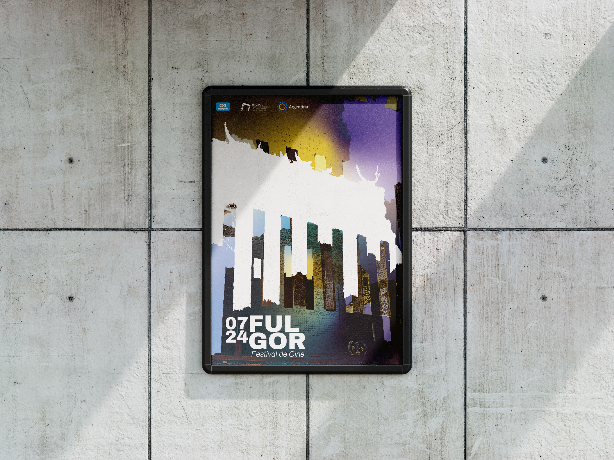
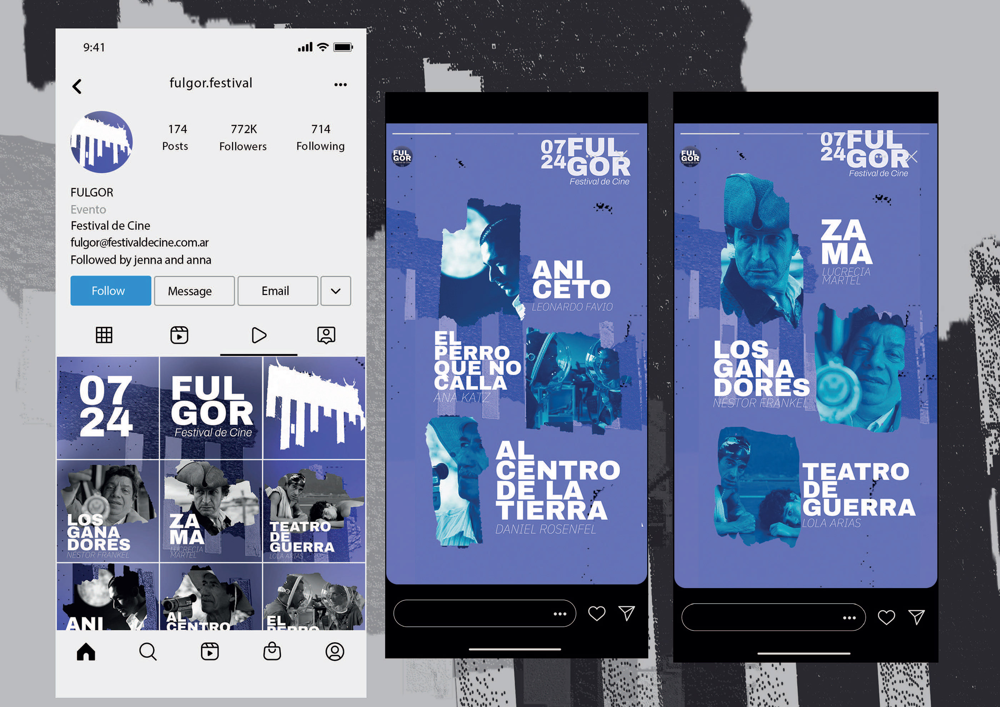
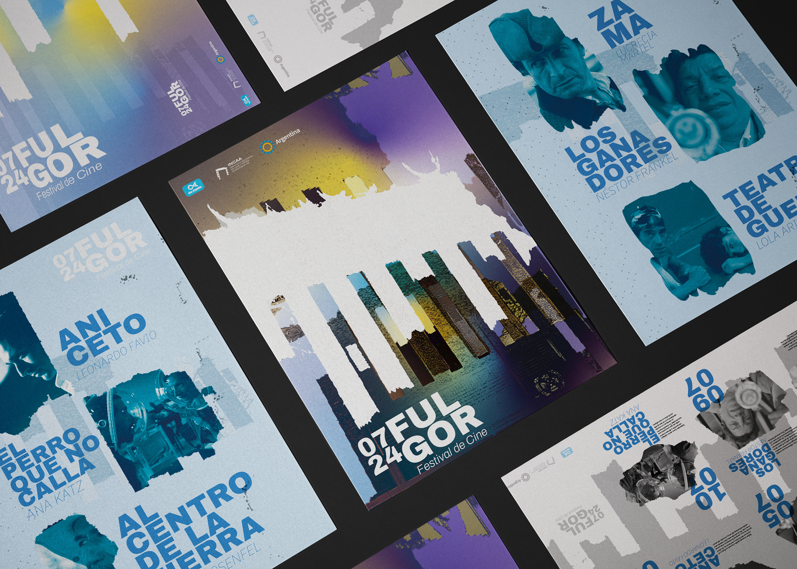
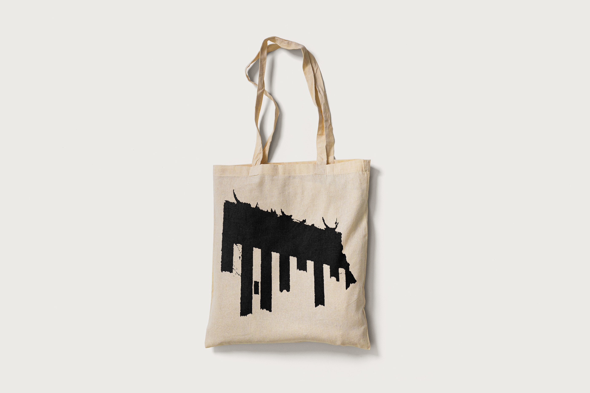
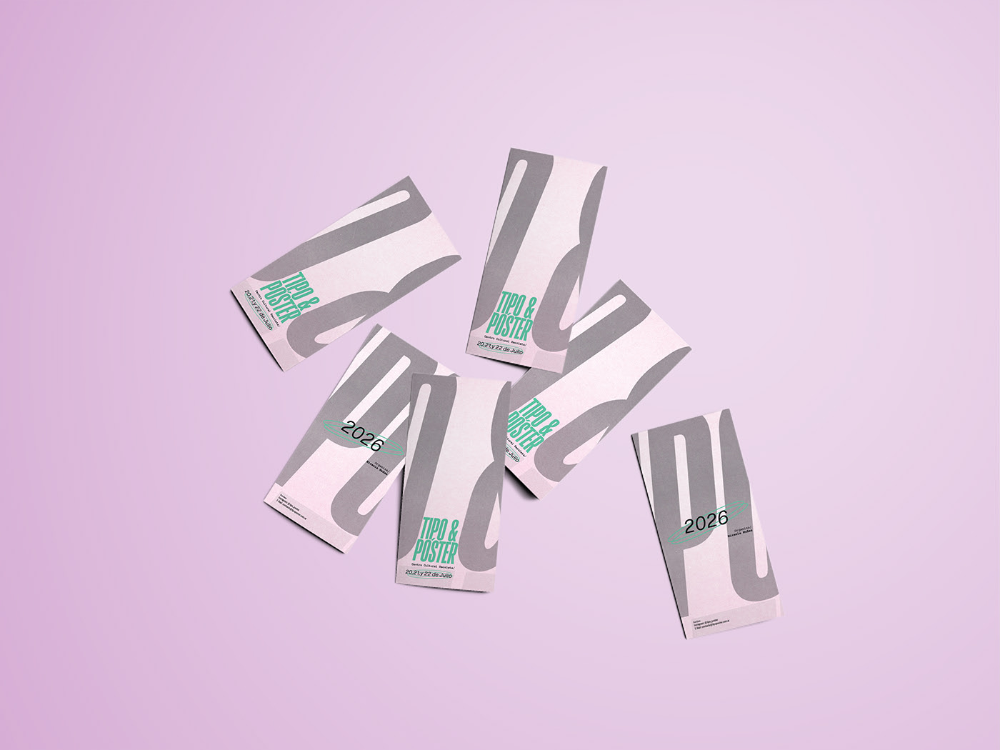
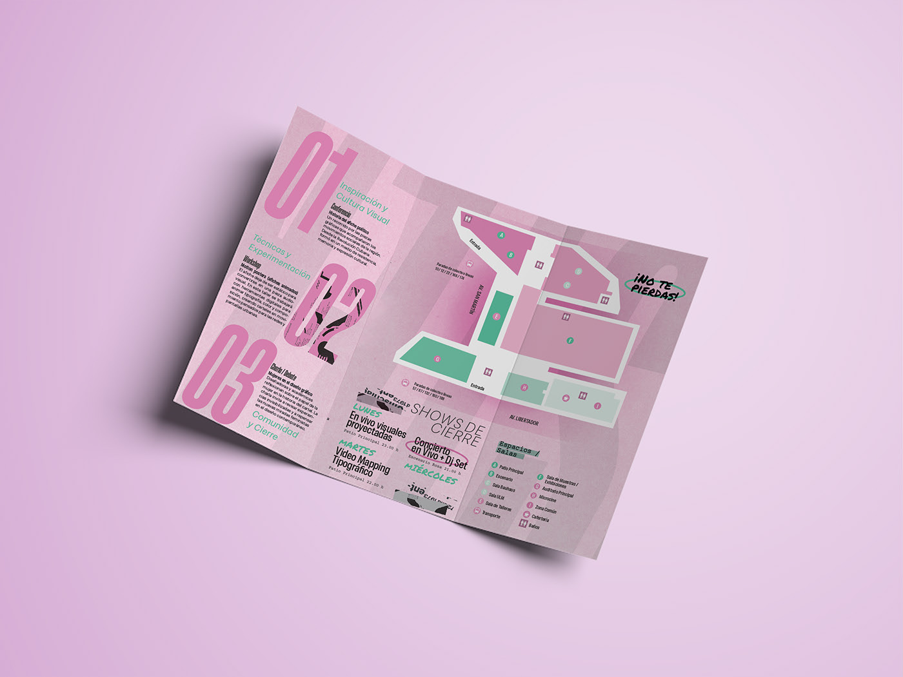
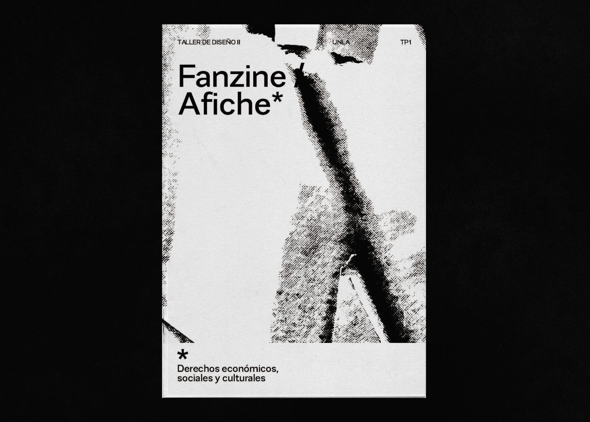
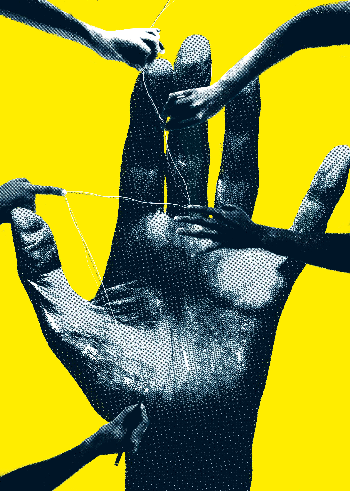

Branding
Festival de Cine Fulgor
Proyecto académico de identidad visual para festival de cine. Realizado en 2024.




Estudiante de Diseño y Comunicación Visual, con base en Artes Visuales. Me caracterizo por una mirada creativa, pensamiento crítico y un fuerte compromiso con cada proyecto. Trabajo con atención al detalle, capacidad de adaptación y buen desempeño tanto en equipos como de forma autónoma. Resido en Lomas de Zamora y cuento con disponibilidad inmediata full-time o part-time.
Universidad Nacional de Lanús 2020 | Licenciatura en Diseño y Comunicación Visual. 40%. Universidad Nacional de las Artes 2016 / 2019 Licenciatura en Artes Visuales con orientación en Grabado y Arte impreso. 40% de la carrera.
Diseñadora Jr | 5ta Gráfica – 2022 Desarrollé piezas gráficas para medios digitales e impresos, creando soluciones visuales a medida en cada proyecto. Realicé ilustraciones digitales y acompañé los procesos desde la idea inicial hasta la entrega final. También brindé atención y asesoramiento, cuidando tanto el resultado visual como la experiencia del cliente, y trabajé con equipos de impresión garantizando la calidad de cada producción.
Proyecto académico de identidad visual para festival de cine. Realizado en 2024.




Proyecto académico realizado en 2025. Diseño editorial que consistió en la elaboración de un libro informativo con datos técnicos, en este caso la propuesta fue de Violencia Institucional.


Proyecto académico realizado en 2025. Diseño editorial de programa de festival de diseño de afiches. El mismo combina talleres, charlas y muestras.



Proyecto sobre educación pública.Este trabajo consistió retratar una problemática social mediante un afiche y un fanzine. El tema elegido fue la Educación Pública, se da un contexto de desfinanciamiento de las universidades y la necesidad de salir a defenderla.


Poster realizado en 2025 para el 29th International Poster Biennale in Warsaw, International Students Copetition. Bajo la tutoría del estudio de diseño argentino, El Fantasma de Heredia. La temática de este proyecto contempla la mirada de los jovenes hacía el futuro.

Participe como estudiante de diseño en la muestra colectiva URGE! Diseño para la emergencia ambiental es un proyecto amplio, dinámico y colaborativo que reúne a diseñadoras, diseñadores y artistas visuales de Chile y Argentina, preocupados por el cambio climático, la preservación del planeta y el cuidado de la naturaleza. También convoca a los estudiantes de la Universidad de Playa Ancha, en el Museo Universitario de Diseño (MUD) de la UNLa.

Este afiche fue realizado para el Festival Internacional de la Imagen Mexico 2026, en el cual quede finalista. Para este proyecto partí del concepto de la cultura como algo que nace y se gesta en comunidad. Es el encuentro con el otro, con los que están y con que ya no. Es donde se cruza lo compartido y empieza a transformarse. Como escribe Octavio Paz: "Para que pueda ser he de ser otro, salir de mí buscarme entre los otros."
